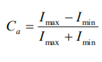

Introduction
According to the WHO, inflammatory periodontal diseases occur in 90-95% of the adult population and lead to
pathological changes in the dentoalveolar system [1].
Diagnosis is more based on visual examination of the oral
cavity and index evaluation of the soft tissue periodontal
conditions and is subjective. In most cases, patients already diagnosed with signs of inflammatory diseases are
diagnosed, diagnosis at an early stage of inflammation
causes significВнесиant difficulties, since there are no
clinical manifestations of the inflammatory process [2-5].
As a result of previous studies, the possibility of visualization of the foci of inflammation of soft periodontal tissue (hereinafter – SPT) at an early stage has been established [1-8].
The purpose of this study is the development and testing
of an algorithm for the automatic detection of foci of inflammation in the IR images of SPT. In the course of the
research, the following tasks were set and solved:
– the effectiveness of segmentation algorithms is investigated when inflammation foci are detected at various
stages of the inflammatory process;
– an assessment of the quality of the algorithm for automatic detection of inflammatory foci on the IR images of
SPT was carried out.
Results
The results of the segmentaion quality estimation are
presented in tab. 3.
Discussion
The segmentation algorithm modulating the gradient on
the boundary of the focus of inflammation with the use of
a sliding mask showed the highest relative segmentation
error, because at the time of registration, artifacts, such as
salivation, with a high modulus of the gradient appear on
the IR images of the SPT, which in turn leads to the detection of regions that do not correspond to the centers of
inflammation of the SPT .
The algorithm for segmentation of inflammatory foci on
the basis of the watershed method showed good results
when a stage of severe inflammation was detected on the
IR images of SPT. Foci of early inflammation of SPT by
the watershed method are not segmented, which makes it
impossible to apply this algorithm as a universal method
for segmentation of inflammatory foci for various stages
of the inflammatory process of SPT.
The segmentation algorithm based on the contrast ratio at
the boundary of the SPT inflammation focus with the use
of a sliding mask is the best and provides the lowest relative segmentation error.
Conclusions
As a result of the study, it was established that the least
relative error of segmentation of inflammatory foci on IR
images of SPT provides an algorithm for automatically
detecting inflammatory foci by the contrast ratio at the
border of the SPT inflammation focus using a sliding
mask.
Materials and Methods
The study was carried out using a verified database of 150
IR images of SPT at various stages of the inflammatory
process, formed as a result of previous studies [7]. The
Database contains of 20 IR images of Intact SPT, 70 IR
images of the stage of the SPT early inflammation and 60
IR images of the stage of the SPT severe inflammation.
The choice of informative parameters of inflammatory
foci is expedient to be carried out taking into account the
laws of visual perception. High contrast of the object with
the background is easier to perceive with the eye, which
allows to identify the primary symptoms of the inflammatory process on the IR images of the SPT. The contrast in
its turn is due to the intensity differences in the image.
Thus, to determine the distinctive features of the inflammatory foci, the parameters characterizing the spatial distribution of the energy of inflammatory foci in the IR images of the SPT are analyzed, see tab. 1.
Table 1: Contents of the IR image of SPT database
| № | The parameter
(pi) | Formula for calculation | Notation |
| 1 |
Average
intensity |
|
Ii – intensity of
the i-th element
of the image
|
| 2 |
Selective SD |
|
| 3 |
Coefficient of
contrast at the
border of the
focus of inflammation of
SPT
|
 |
Imax, Imin – the
maximum and
minimum modes of intensity
histogram |
| 4 |
Modulus of
gradient on
the border of
the inflammatory focus of
SPT |
|
Gx=dI/dx,
Gy=dI/dy are
the intensity
gradients in the
horizontal and
vertical directions, respectively |
| 5 |
The ratio of
average intensities |
|
Io is the average
intensity of the
image
|
In the course of the studies it was established that the IR
images of the SPT at the stage of early and severe inflammation differ from intact tissues by the mean intensity Im, the selective mean square deviation SI, the contrast
coefficient at the border of the inflammatory focus of the
SPT Ca, the gradient modulus at the border of the inflammatory focus of the
Table 2: Values of informative parameters of inflammatory foci on IR images of SPT
| № | Parameters | Intact
tissues |
early inflammation |
severe inflammation |
| 1 | Im | 0,39± 0,04 | 0,36± 0,01 | 0,71± 0,02 |
| 2 | SI | 0,03± 0,01 | (70± 1)10-3 | (60± 1)10-3 |
| 3 | Ca | 0,33± 0,02 | 0,54± 0,02 | 0,55± 0,15 |
| 4 | G | (18± 3)10-4 | (50± 1)10-4 | (48± 1)10-4 |
| 5 | r | 1,18± 0,18 | 1,82± 0,18 | 3,68± 0,78 |
There were threshold segmenation with the parameters
Ca, G, and a watershed method applied for automatic
segmentation of the centers of an inflammation on IR
images of SPT.
The calculation of Im, SI and r were carried out within the
investigated area of the potential focus of inflammation,
and for G and Ca – outside. If the obtained values of informative parameters belong to the confidence intervals
of the foci of inflammation, then the region was classified
as a foci of inflammation, if not, then intact tissues.
The evaluation of the segmentaion quality was carried out
by calculating the relative error of the detection of foci for
each of the algorithms:
where k is the relative error, Sa – the area of the focus of
inflammation, obtained in the mode of automatic allocation using the considered segmentation algorithms, Sm - the
area of the focus of inflammation, allocated manually.
The Sa and Sm were determined by counting overall pixels
quantity of the segmented areas. The smaller the relative
error of the two areas, the more accurately the area of the
focus of inflammation of the SPT is segmented.